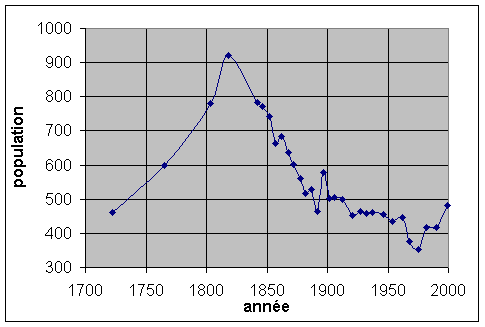
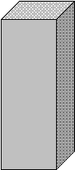
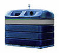
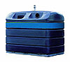
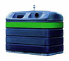

|
INFORMATIONS MUNICIPALES 1999 |
|
|
INFORMATIONS MUNICIPALES 1999 |
|

L'I.N.S.E.E. (Institut National de la Statistique et des Etudes Economiques) nous a fait parvenir les résultats globaux du recensement. Le chiffre communiqué nous donne une population totale de 483 habitants. En 1982 et 1990, dates des précédents recensements celle-ci était de 417 habitants, soit près de 16% d'augmentation (le plus fort pourcentage d'augmentation du canton).
M. HENAFF, dans les années 1980, a réalisé une étude sur la commune. Dans ce document, on y trouve un tableau des différents recensements depuis 1722 soit plus de deux siècles et demi. Curieusement, nous avons aujourd'hui sensiblement la même population, mais entre ces deux dates, la population n'est pas restée constante.

Par ailleurs, nous savons qu'en 1722, il y avait 110 feux. Le rapprochement de ce chiffre avec les 170 résidences principales recensées montre qu'aujourd'hui le nombre par habitation est moins élevé.
Dans la commune, c'est Mme Jacqueline BAUDRON qui a été chargée du recensement. Je tiens à la remercier pour le sérieux et le professionalisme avec lesquels elle a accompli cette tâche.
Après plusieurs années d'attente, la deuxième partie du chemin du «Bas Cantel» a été réalisée il y a quelques semaines par l'Entreprise BOUTTE. C'est une dépense qui avoisine les 250 000 F.
Le chiffrage du Contrat de Pôle Intercommunal a été réalisé, le dossier est déposé au Conseil Régional pour aval.
Le Contrat de Pôle Intercommunal est une procédure de développement régionale dont l'objectif est de valoriser un bassin de vie en apportant un soutien financier à la réalisation d'un programme d'actions revêtant un caractère exceptionnel. Celles-ci peuvent ausi bien relever du domaine économique, touristique, socioculturel que de l'aménagement du territoire.
Les projets communautaires suivants ont été retenus :
Cette réalisation va permettre de réutiliser les anciennes salles de classe, permettre de développer l'inititiation à l'art en milieu rural, et d'accueillir diverses expositions. Le projet nécessite :
Le coût estimatif est de 505 000 F entièrement pris en charge par la Communauté de Communes de l'Elle et la Région. La mise en oeuvre devrait intervenir dans le 2ème semestre 2000.
Par ailleurs, chaque commune bénéficiera d'aides pour aménager les centres bourgs, tant dans le domaine de la sécurité que de la mise en valeur. A Villiers-Fossard, les travaux n'interviendront pas avant 2002. Nous aurons l'occasion d'en reparler
La porte de l'an 2000 va bientôt être franchie, je vous souhaite à toutes et à tous d'entrer dans le nouveau millénaire avec la santé, la joie et la convivialité.
Votre Maire.
|
DÉPENSES |
MONTANT |
RECETTES |
MONTANT |
|
60 - Achats
& Variations |
90 000 |
70 - Produits
des Services |
6 000 |
|
61 - Services
Extérieurs |
218 776 |
73 -
Impôts et Taxes |
317 322 |
|
62 - Autres
Services |
175 700 |
74 - Dotations
et participations |
329 432 |
|
63 -
Impôts et Taxes (Taxe |
4 000 |
75 - Autres
Produits de la |
80 000 |
|
64 - Charges
du Personnel |
230 500 |
013 -
Atténuations des charges |
2 000 |
|
65 - Autres
Charges de |
267 735 |
002 - Excédent reporté |
588 279 |
|
66 - Charges
Financières |
19 992 |
|
|
|
68 - Dotations
aux |
1 145 |
|
|
|
023 - Virement
Section |
315 185 |
|
|
|
TOTAL |
1 323 033 |
TOTAL |
1 323 033 |
|
DÉPENSES |
MONTANT |
RECETTES |
MONTANT |
|
001 - Solde d'exécution |
90 517 |
1068 - Dotations, réserves |
122 517 |
|
16 - Emprunts (annuités) |
28 330 |
48 - Charges à répartir |
3 435 |
|
23 - Travaux
et Aménagements |
320 000 |
021 - Virement
de la |
315 185 |
|
28 - Dotations
aux |
2 290 |
|
|
|
TOTAL> |
441 137 |
TOTAL |
441 137 |
Depuis mai 1999, 5 100 habitants de la Communauté de Communes de l'Elle sont passés au tri sélectif de leurs déchets ménagers. Après quelques semaines de mise en route, le temps que chacun trouve la meilleure façon de s'organiser, d'apprendre les gestes du tri, la collecte sélective est désormais entrée dans les habitudes quotidiennes.
Nous tenons à vous remercier pour votre civisme et nous vous encourageons à continuer en ce sens pour préserver au mieux notre environnement, limiter les quantités de déchets à enfouir et mieux valoriser nos déchets ménagers
En 5 mois... 155 tonnes de déchets recyclables déposés dans les Espaces Tritou
|
108 tonnes |
30 tonnes |
17 tonnes |
|
 |
|
|
|
bouteilles et bocaux |
journaux, magazines, |
bouteilles plastiques, |
|
 |
 |
 |
Grâce au tri que vous effectuez quotidiennement, ce sont ainsi 155 tonnes de déchets (soit 30 kg par habitant) qui ont pu être recyclés, évitant ainsi d'être mis en décharge.
Où peut-on déposer les déchets verts ?
Les déchets verts peuvent être déposés à la déchetterie mobile de Saint-Clair-sur-Elle qui stationne chaque mardi de 9h à 18h sur la Place de la Mairie. Vous pouvez également y déposer les encombrants, les pneus de voiture, la ferraille, les piles, les gros cartons d'emballage, les huiles de vidange...
Sur place, un agent est présent pour vous guider et vous aider. Vous pouvez également accéder à la déchetterie de Saint-Lô (horaires d'ouverture : du lundi au vendredi de 14h à 18h, le samedi de 9h à 12h et de 14h à 18h).